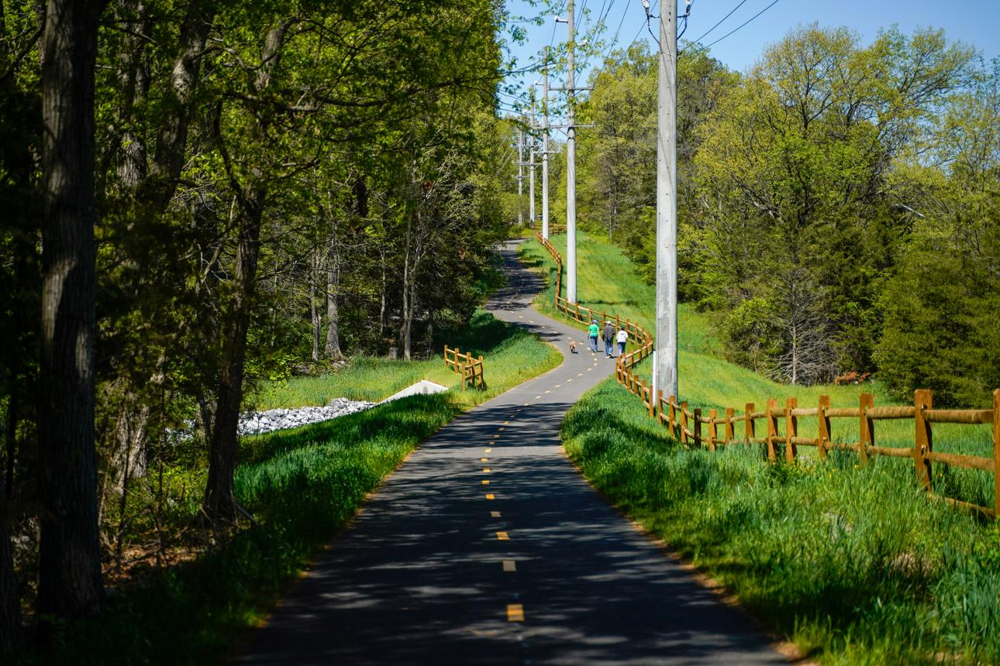
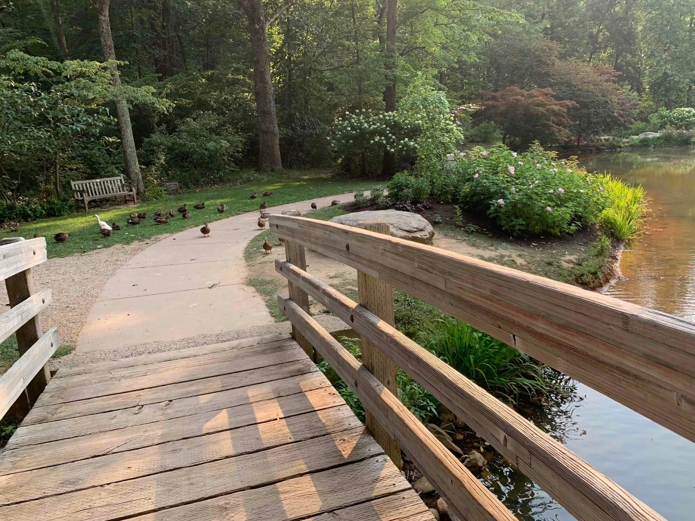
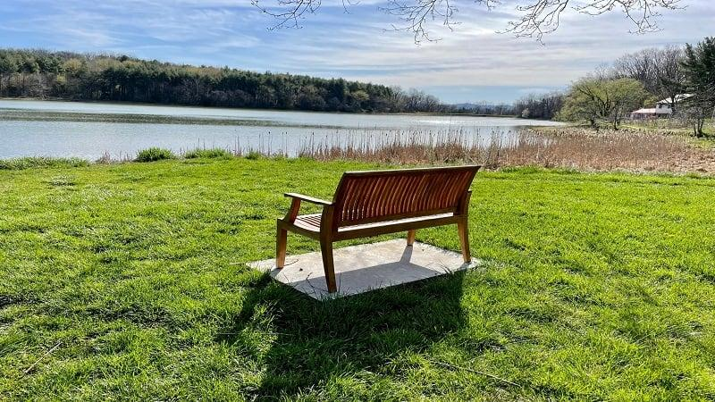

Explore Local Trails
Looking for somewhere new to run? This directory introduces several outdoor destinations in and around Harrisonburg, Virginia.
Consider the surface, scenery, and your experience level when choosing a place to run. Check official information before visiting.
Rocktown Trails

Location: Hillandale Park, Harrisonburg
Trail experience: Natural surfaces and wooded surroundings.
Rocktown Trails is an option for runners who enjoy being surrounded by trees and exploring paths away from busy roads.
Friendly City Trail

Trail experience: A paved path for walking and running.
Friendly City Trail may appeal to runners who prefer a smoother surface for easy runs, relaxed outings, or getting started with a running routine.
Tip: Be considerate of walkers and other people using the path.
Edith J. Carrier Arboretum

Location: Near James Madison University
Trail experience: Natural scenery and woodland paths.
The arboretum offers a scenic place to explore plants, trees, and natural surroundings. Check the site's visitor guidance before planning a run, since some paths or activities may have restrictions.
Lake Shenandoah

Trail experience: Outdoor scenery and lake views.
Lake Shenandoah is an option for visitors who enjoy peaceful surroundings and views of the water. Take time to check the available paths and current site information before your visit.
Tip: Bring water and plan your outing around the weather and daylight.
Which Trail Should You Choose?
- Prefer a smoother surface? Consider a paved path.
- Want a wooded setting? Look into natural-surface trails.
- Want a scenic outing? Research destinations with lake or woodland views.
- Trying somewhere new? Check access, conditions, and visitor rules first.
Visit our running routes page for more ideas on planning your next outing.